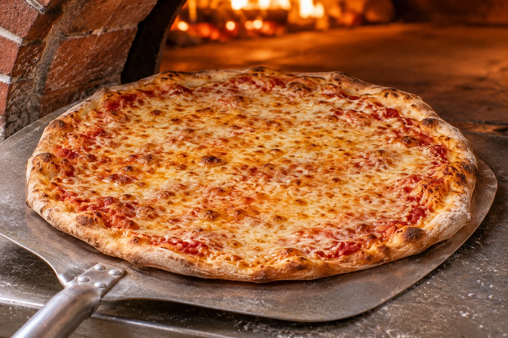
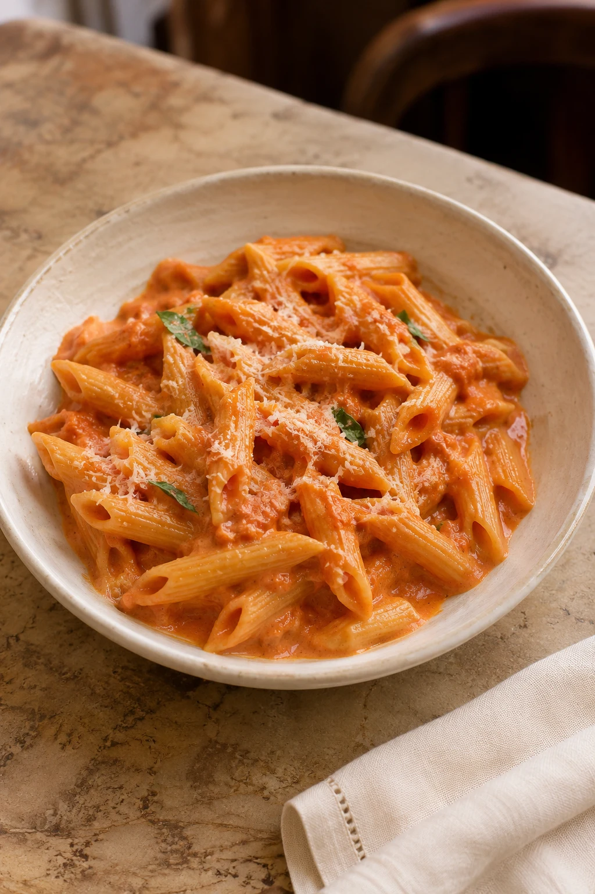
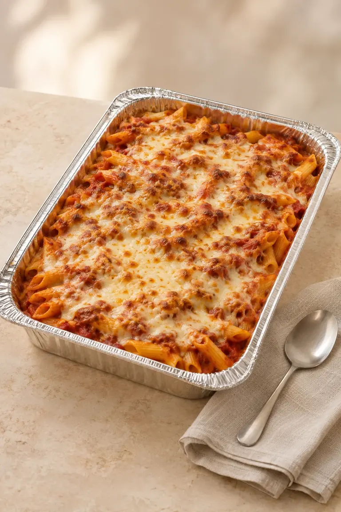

WHITESTONE, QUEENS
A table.
A pie.
A good night.
Brick oven pizza and Italian favorites on 10th Avenue.
CASCARINO’S, WHITESTONE
Start with pizza.
Stay for everything else.
A Grandma pie for the table. Penne vodka on the side. Something sweet to finish. Find your favorites, then make it your kind of meal.
Find your favorites
At the table
Good company.
One more slice.
THE MENU
The menu.
Your favorites.
Brick oven pies, pasta, starters and dessert. Explore the menu below, then order pickup or delivery on Toast.

CATERING
Catering for
your group.
Planning a family gathering or an office lunch? Our catering menu includes pasta trays, Italian entrées, salads and heroes. Call to discuss your order and pickup time.
Plan your catering order718 746 4370
WHITESTONE
On 10th Avenue.
152-59 10th Avenue
Whitestone, NY 11357
Whitestone, NY 11357
Online ordering: daily, 10:45 AM–8:45 PM.
Call to confirm dine-in and holiday hours.
YOUR NEXT ORDER
Order pickup or delivery.